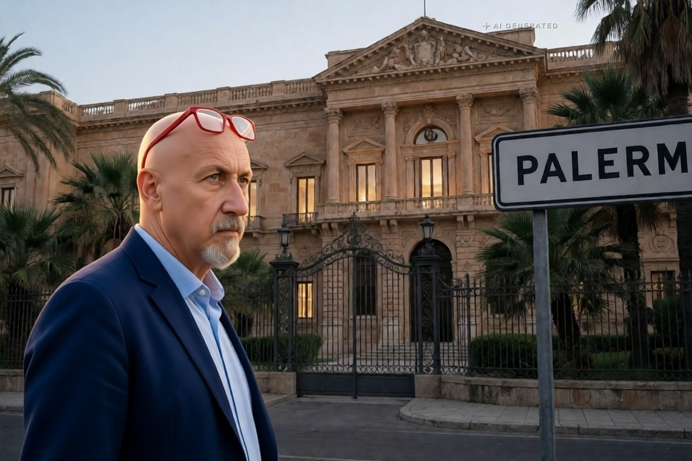

Cronaca · 7 novembre 2026
Gaetano Armao agli arresti domiciliari per corruzione

L'ex vicepresidente della Regione Siciliana presiedeva la commissione che dà il via libera ambientale ai progetti. Secondo l'accusa incassava denaro dagli imprenditori attraverso un avvocato. Lui parla di prestiti e consulenze.
di Franco Zanghì
Il 6 novembre la giudice per le indagini preliminari di Palermo, Giuseppa Zampino, ha disposto gli arresti domiciliari per Gaetano Armao, ex vicepresidente della Regione Siciliana, per l'avvocato Pierluigi Matta e per Luigi Zancla, ex presidente della Samo onlus. L'accusa è corruzione. La procura di Palermo, per Armao e Matta, aveva chiesto il carcere. Sono state respinte invece le misure per gli altri indagati, fra cui il deputato regionale Giuseppe Lombardo.
Che cosa contesta l'accusa
Armao era esperto del presidente della Regione Renato Schifani e presidente della Commissione tecnica specialistica, l'organo che dà il via libera ambientale ai progetti, comprese le energie rinnovabili. Secondo i pubblici ministeri, attraverso Matta avrebbe incassato denaro da alcuni imprenditori in cambio di favori.
Il meccanismo ipotizzato dall'accusa: bonifici a Matta per consulenze mai svolte e poi contante consegnato ad Armao. Le telecamere degli investigatori, piazzate in automobili e studi, avrebbero ripreso diversi passaggi di denaro. Il 9 febbraio, secondo LiveSicilia, Armao sarebbe stato filmato nel Collegio San Rocco, sede della facoltà di Scienze politiche dove insegna, mentre riponeva dei soldi dentro un orologio a pendolo.
C'è poi un filone sulla sanità: secondo l'accusa Zancla avrebbe pagato perché il servizio di cure palliative gestito dalla sua onlus non venisse esteso ad altre associazioni.
La difesa e la decisione della giudice
Armao respinge le accuse: davanti alla giudice ha sostenuto che non si trattava di tangenti ma di prestiti personali o di compensi per consulenze. Per la giudice, invece, emerge uno schema operativo non meramente occasionale, e resta il pericolo concreto e attuale di reiterazione, anche se Armao si è dimesso da esperto del presidente della Regione all'inizio di ottobre.
Per Armao, Matta e Zancla vale la presunzione d'innocenza fino alla sentenza definitiva.
Il punto
Quella commissione decide chi può investire in Sicilia nel settore dell'ambiente e dell'energia. Se l'accusa venisse provata, significherebbe che per passare da quella porta qualcuno pagava un pedaggio. E a pagarlo, alla fine, sarebbero le imprese oneste: quelle che il pedaggio non lo pagano e restano indietro.
Fonti
- Sky TG24, «Corruzione, ai domiciliari ex vicepresidente Regione Sicilia Gaetano Armao», 6 novembre 2026
- PalermoToday, «Inchiesta per corruzione, il gip ha deciso: Gaetano Armao ai domiciliari», 6 novembre 2026
- Giornale di Sicilia, «L'inchiesta per corruzione, Armao finisce ai domiciliari», 7 novembre 2026
- tp24, «Armao arrestato, è ai domiciliari: pericolo concreto e attuale di reiterazione», 7 novembre 2026
Si tratta di una misura cautelare adottata nella fase delle indagini: non è un giudizio di colpevolezza e può essere impugnata davanti al tribunale del riesame. Le ricostruzioni qui riportate sono l'ipotesi dell'accusa. TempoStretto attribuisce l'inchiesta alla procura di Messina e la collega a un filone sui rifiuti nell'Agrigentino: entrambi i dati non trovano riscontro nelle altre testate e restano fuori da questa pagina.